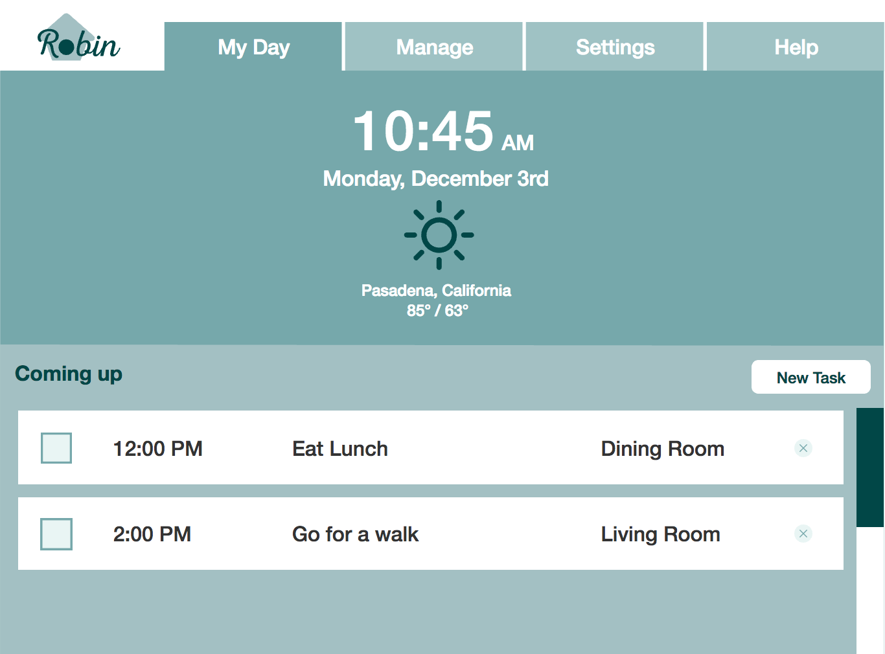

Robin
Robin is a prototype for a conversational UI that works with Amazon Alexa to provide assistance to users with cognitive impairments caused by conditions like dementia. This was my team's submission to the 2017 CHI Student Design Competition where we came in second place out of 70 entries from around the globe.
| Year: | 2016 / 2017 |
| Role: | Prototyping and Visual Design Lead |
| Duration: | 4 Months |
| Awards: | 2nd Place, CHI Student Design Competition |
| Demo |
The Problem Space
Initial Research
We conducted interviews with caregivers and healthcare providers, and a review/analysis of dementia forums around the web. Through our research we identified some key insights:
- Varied Symptoms
Individuals have extremely varied symptoms even though impairment caused by dementia progressed similarly. - Power of Routines
The further the disease progresses, the more individuals adhere to routines. Straying from these routines lead to negative health effects including increased hospitalization and mortality. - Elders want assistance
Elders are eager to adopt technologies that will help them maintain independence. 65% of forum respondents indicated that they would be interested in trying Robin. - Tech to help now
There are several cutting-edge interventions being explored and developed, but many are not market-ready and remain research projects.
Our Goal
From conversations with informal caregivers, we realized that the most impactful thing we can do to help caregivers and adults experiencing cognitive impairment is to use technology in ways that enable them to stay independent for as long as possible.
Our Process
We used a dementia patient and a primary informal caregiver as user personas and created 30 scenarios. From this, we found three areas where routine assistance could help: reminders, step-by-step guidance, and improving quality-of-life.
We then storyboarded three scenarios and used them in collaborative speed-dating sessions with caregivers and healthcare providers. We determined from these speed-dating sessions that our solution should:
- Support Successful Routine Management
- Enable users to remain independent in their homes for as long as possible
- Be customizable and adaptable with the user’s cognitive decline
- Be inexpensive and readily available
We then created paper prototypes and performed four think-aloud usability tests. Using the feedback from these tests, we created a higher fidelity digital prototype of the application interface. We performed four additional think-alouds and continued to iteratively prototype. Finally, ee polished our solution by performing a heuristic evaluation using AARP-developed website heuristics for older adults.
Our Solution
We created Robin, a conversational user interface that evens the playing field by assisting older adults with dementia, or really anyone who needs help completing tasks in their home. Robin is a two part system: a conversational user interface and a tablet application.
For the conversational interface, users place Amazon dots throughout their home, starting with only the rooms where they are having difficulty completing tasks and adding devices over time as needed. This allows Robin to have contextual information about where the user is in the home, which in turn allows Robin to provide better assistance to the user.
Using the tablet application, users and their loved input tasks and routines, labeling them with a specific time and room. Rather than addressing very specific tasks and symptoms, Robin is a task-management platform that works with voice assistants like Amazon Alexa to provide three types of customizable services to users as needed within their own homes: helping you stay on routine, orienting you within your day to day activities, and guiding you through the granular steps of a specific task. As the you configure each routine item, you can set a threshold of when a reminder is appropriate for the item. This can be adjusted over time as you need more help remembering to perform certain tasks in your daily routine. It’s completely flexible based on the needs of the user.
Robin then becomes a partner in your daily routine, allowing users to ask questions for help and receive customized reminders throughout the day.
Prototype Demo

Why Robin?
The use of routines helps users to regain confidence and control over their everyday lives. By alleviating the need for caregiver assistance in the early stages of cognitive decline, Robin allows users to stay self sufficient longer. This in turn allows for a decrease in dependence on loved ones and a reduction in the overwhelming amount of unpaid caregiver work.
By using Amazon assistant devices, Robin is something that could be on the market in the very near future. At only $50 for an Amazon Dot, users and their loved ones can easily buy these devices, install them, and begin integrating them into their everyday lives.
On top of this, we found that older-adults already use voice assistants in their day to day activities. In our validation survey after our design phase, one user explicitly said “I have been asking for someone to please make us a programmable Siri.” In addition, 65% of respondents said that they would be interested in trying a device like Robin.
Because many of Robin’s features are also applicable and useful to those not suffering from cognitive decline, we believe that Robin would be maintained and updated, contrary to many abandoned accessibility tools that were conceived without universal design in mind.
But most importantly, by offering context-appropriate assistance when the user needs it the most, we believe that Robin would enable users to stay independent for longer and enjoy a better quality of life.
Paper

Team
The team (from left to right): Jayanth Prathipati, Adena Lin, Meg Nidever, Clare Carroll, and Catherine Chiodo (not pictured).